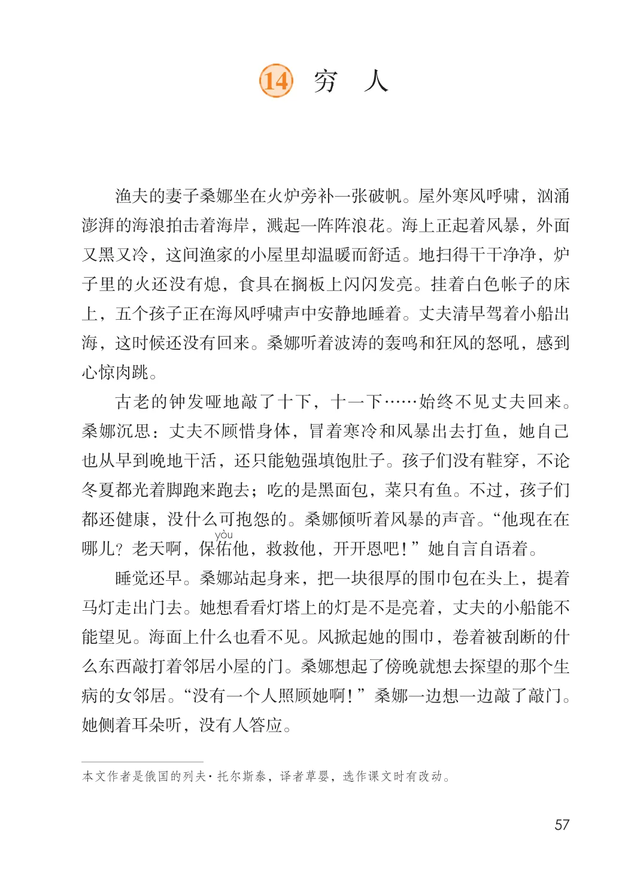
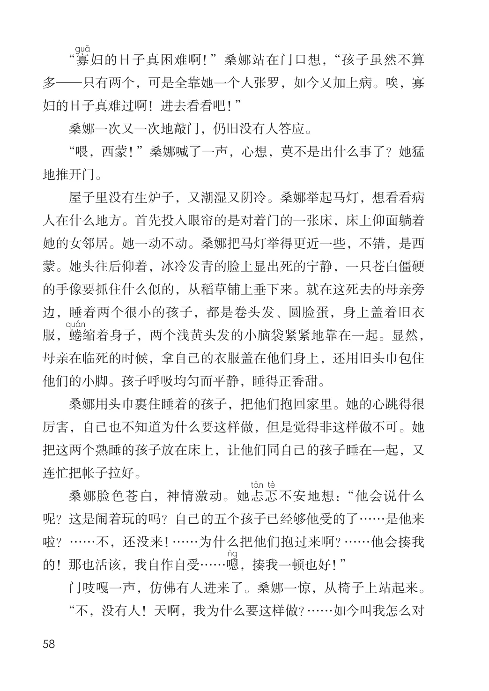
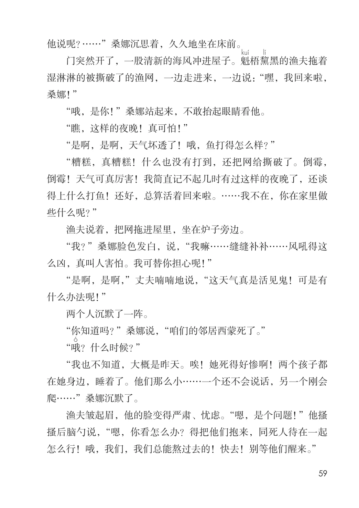
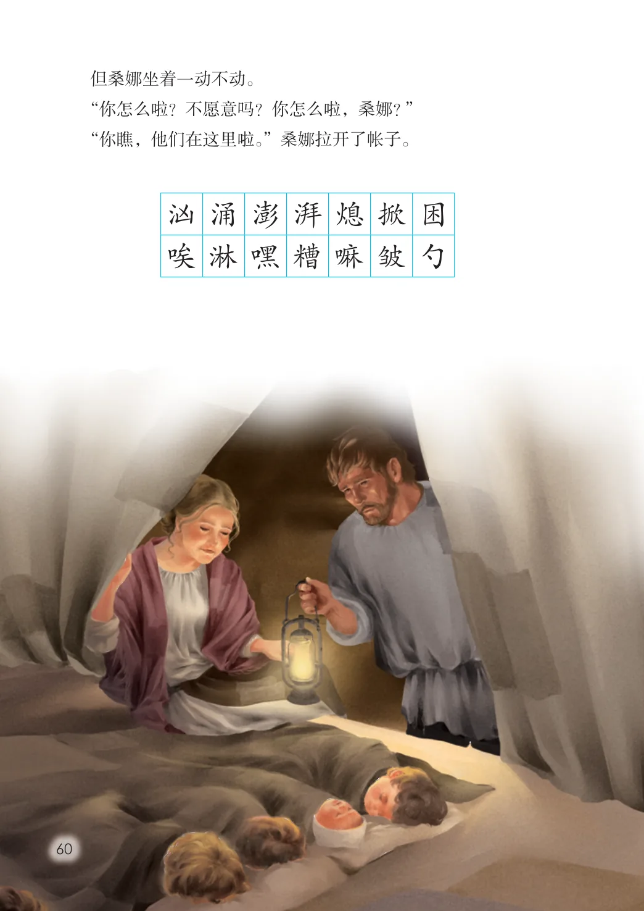
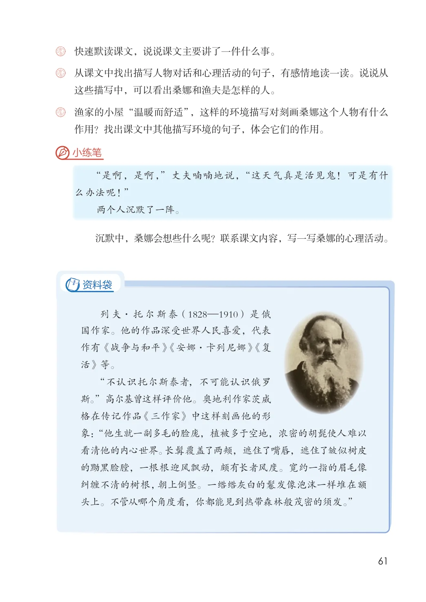

第四单元 · 第 14 课
穷人
文字内容 PDF 第 62 页
渔夫的妻子桑娜坐在火炉旁补一张破帆。屋外寒风呼啸，汹涌澎湃的海浪拍击着海岸，溅起一阵阵浪花。海上正起着风暴，外面又黑又冷，这间渔家的小屋里却温暖而舒适。地扫得干干净净，炉子里的火还没有熄，食具在搁板上闪闪发亮。挂着白色帐子的床上，五个孩子正在海风呼啸声中安静地睡着。丈夫清早驾着小船出海，这时候还没有回来。桑娜听着波涛的轰鸣和狂风的怒吼，感到心惊肉跳。
古老的钟发哑地敲了十下，十一下……始终不见丈夫回来。桑娜沉思：丈夫不顾惜身体，冒着寒冷和风暴出去打鱼，她自己也从早到晚地干活，还只能勉强填饱肚子。孩子们没有鞋穿，不论冬夏都光着脚跑来跑去；吃的是黑面包，菜只有鱼。不过，孩子们都还健康，没什么可抱怨的。桑娜倾听着风暴的声音。“他现在在哪儿？老天啊，保佑他，救救他，开开恩吧！”她自言自语着。
睡觉还早。桑娜站起身来，把一块很厚的围巾包在头上，提着马灯走出门去。她想看看灯塔上的灯是不是亮着，丈夫的小船能不能望见。海面上什么也看不见。风掀起她的围巾，卷着被刮断的什么东西敲打着邻居小屋的门。桑娜想起了傍晚就想去探望的那个生病的女邻居。“没有一个人照顾她啊！”桑娜一边想一边敲了敲门。她侧着耳朵听，没有人答应。
文字内容 PDF 第 63 页
“寡妇的日子真困难啊！”桑娜站在门口想，“孩子虽然不算多—只有两个，可是全靠她一个人张罗，如今又加上病。唉，寡妇的日子真难过啊！进去看看吧！”
桑娜一次又一次地敲门，仍旧没有人答应。
“喂，西蒙！”桑娜喊了一声，心想，莫不是出什么事了？她猛地推开门。
屋子里没有生炉子，又潮湿又阴冷。桑娜举起马灯，想看看病人在什么地方。首先投入眼帘的是对着门的一张床，床上仰面躺着她的女邻居。她一动不动。桑娜把马灯举得更近一些，不错，是西蒙。她头往后仰着，冰冷发青的脸上显出死的宁静，一只苍白僵硬的手像要抓住什么似的，从稻草铺上垂下来。就在这死去的母亲旁边，睡着两个很小的孩子，都是卷头发、圆脸蛋，身上盖着旧衣服，蜷缩着身子，两个浅黄头发的小脑袋紧紧地靠在一起。显然，母亲在临死的时候，拿自己的衣服盖在他们身上，还用旧头巾包住他们的小脚。孩子呼吸均匀而平静，睡得正香甜。
桑娜用头巾裹住睡着的孩子，把他们抱回家里。她的心跳得很厉害，自己也不知道为什么要这样做，但是觉得非这样做不可。她把这两个熟睡的孩子放在床上，让他们同自己的孩子睡在一起，又连忙把帐子拉好。
桑娜脸色苍白，神情激动。她忐忑不安地想：“他会说什么呢？这是闹着玩的吗？自己的五个孩子已经够他受的了……是他来啦？……不，还没来！……为什么把他们抱过来啊？……他会揍我的！那也活该，我自作自受……嗯，揍我一顿也好！”
门吱嘎一声，仿佛有人进来了。桑娜一惊，从椅子上站起来。“不，没有人！天啊，我为什么要这样做？……如今叫我怎么对
文字内容 PDF 第 64 页
他说呢？……”桑娜沉思着，久久地坐在床前。
门突然开了，一股清新的海风冲进屋子。魁梧黧黑的渔夫拖着湿淋淋的被撕破了的渔网，一边走进来，一边说：“嘿，我回来啦，桑娜！”
“哦，是你！”桑娜站起来，不敢抬起眼睛看他。
“瞧，这样的夜晚！真可怕！”
“是啊，是啊，天气坏透了！哦，鱼打得怎么样？”
“糟糕，真糟糕！什么也没有打到，还把网给撕破了。倒霉，倒霉！天气可真厉害！我简直记不起几时有过这样的夜晚了，还谈得上什么打鱼！还好，总算活着回来啦。……我不在，你在家里做些什么呢？”
渔夫说着，把网拖进屋里，坐在炉子旁边。
“我？”桑娜脸色发白，说，“我嘛……缝缝补补……风吼得这么凶，真叫人害怕。我可替你担心呢！”
“是啊，是啊，”丈夫喃喃地说，“这天气真是活见鬼！可是有什么办法呢！”
两个人沉默了一阵。
“你知道吗？”桑娜说，“咱们的邻居西蒙死了。”
“哦？什么时候？”
“我也不知道，大概是昨天。唉！她死得好惨啊！两个孩子都在她身边，睡着了。他们那么小……一个还不会说话，另一个刚会爬……”桑娜沉默了。
渔夫皱起眉，他的脸变得严肃、忧虑。“嗯，是个问题！”他搔搔后脑勺说，“嗯，你看怎么办？得把他们抱来，同死人待在一起怎么行！哦，我们，我们总能熬过去的！快去！别等他们醒来。”
文字内容 PDF 第 65 页
但桑娜坐着一动不动。“你怎么啦？不愿意吗？你怎么啦，桑娜？”“你瞧，他们在这里啦。”桑娜拉开了帐子。
汹涌澎湃熄掀困唉淋嘿糟嘛皱勺
课后练习
- 快速默读课文，说说课文主要讲了一件什么事。
- 从课文中找出描写人物对话和心理活动的句子，有感情地读一读。说说从这些描写中，可以看出桑娜和渔夫是怎样的人。渔家的小屋“温暖而舒适”，这样的环境描写对刻画桑娜这个人物有什么作用？找出课文中其他描写环境的句子，体会它们的作用。
- 小练笔“是啊，是啊，”丈夫喃喃地说，“这天气真是活见鬼！可是有什么办法呢！”两个人沉默了一阵。沉默中，桑娜会想些什么呢？联系课文内容，写一写桑娜的心理活动。资料袋列夫· 托尔斯泰（1828—1910）是俄国作家。他的作品深受世界人民喜爱，代表作有《战争与和平》《安娜·卡列尼娜》《复活》等。“不认识托尔斯泰者，不可能认识俄罗斯。”高尔基曾这样评价他。奥地利作家茨威格在传记作品《三作家》中这样刻画他的形象：“他生就一副多毛的脸庞，植被多于空地，浓密的胡髭使人难以看清他的内心世界。长髯覆盖了两颊，遮住了嘴唇，遮住了皱似树皮的黝黑脸膛，一根根迎风飘动，颇有长者风度。宽约一指的眉毛像纠缠不清的树根，朝上倒竖。一绺绺灰白的鬈发像泡沫一样堆在额头上。不管从哪个角度看，你都能见到热带森林般茂密的须发。”
原版对照
原书页面与全部插图
点击图片可查看大图。




